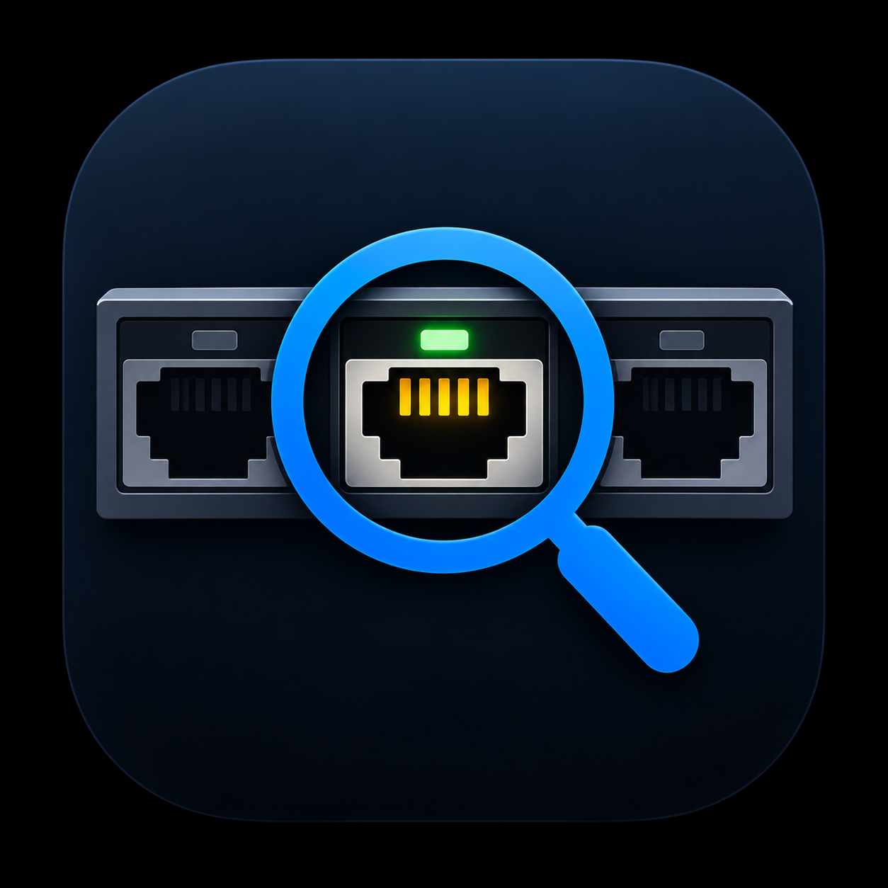

Secure passive wired discovery
JackPeek
Passive LLDP/CDP only
Document this switch port
No probing, no switch login, no SNMP, no ping, and no packets sent.
Loading Ethernet adapters...
MAC
Not advertised
IP
Not assigned
Last evidence
Not captured
Observed neighbors
Switch identity, port advertisements, VLANs, and raw discovery TLVs.
Evidence history
Recent passive captures saved on this workstation.
Enterprise evidence
Local-first records with optional internal NAS mirroring.
Loading evidence settings...
Release integrity
Release builds should publish the Windows executable, WiX MSI, and SHA-256 files beside both artifacts.
Installer
WiX Toolset MSI
Update validation
SHA-256 per release artifact
License status
Checking offline license...
License file
Not installed
No external connection is required.